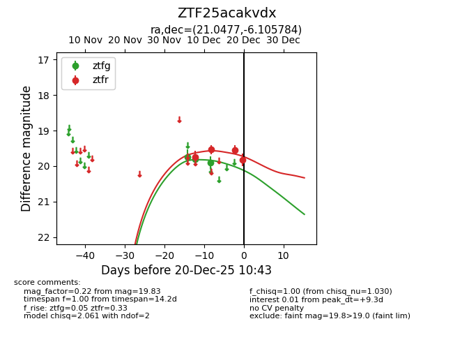
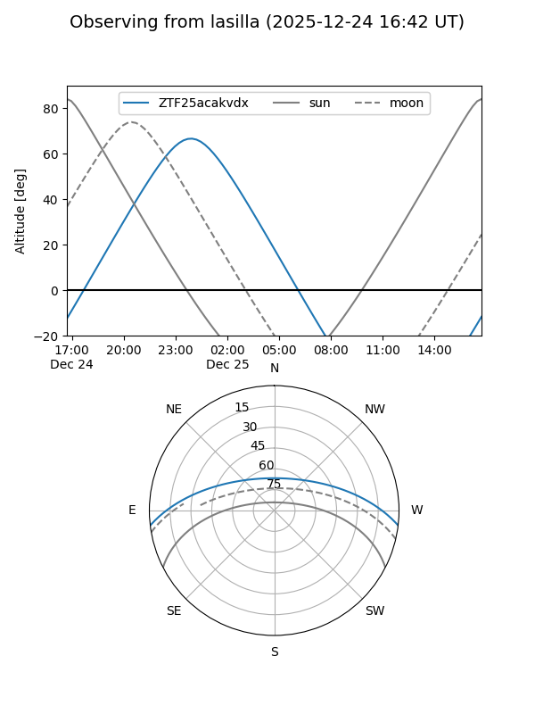
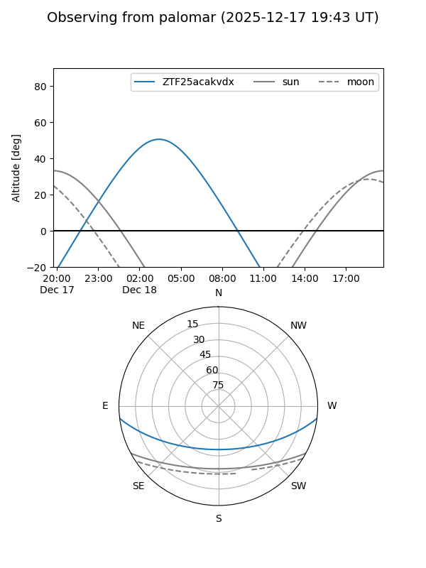
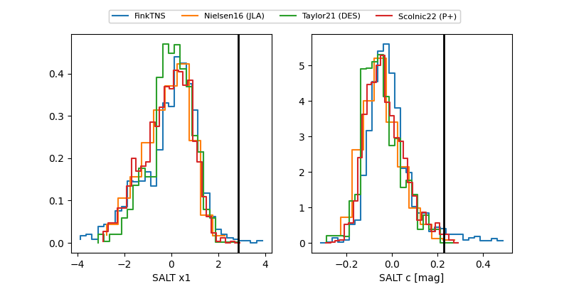

ZTF25acakvdx
Target ZTF25acakvdx at 2025-12-20 10:45
Aliases and brokers:
FINK: fink-portal.org/ZTF25acakvdx
Lasair: lasair-ztf.lsst.ac.uk/objects/ZTF25acakvdx
ALeRCE: alerce.online/object/ZTF25acakvdx
alt names
ZTF25acakvdx (ztf,fink_ztf)
Coordinates:
equatorial (ra, dec) = 21.0477,-6.10578
equatorial (HMS+DMS) = 01:24:11.45,-06:06:20.82
galactic (l, b) = (144.7296,-67.58080)
Flags:
Photometry:
last ztfg=19.90, ztfr=19.83
3 ztfg, 4 ztfr detections
Lightcurve

Visibility


Additional plots
